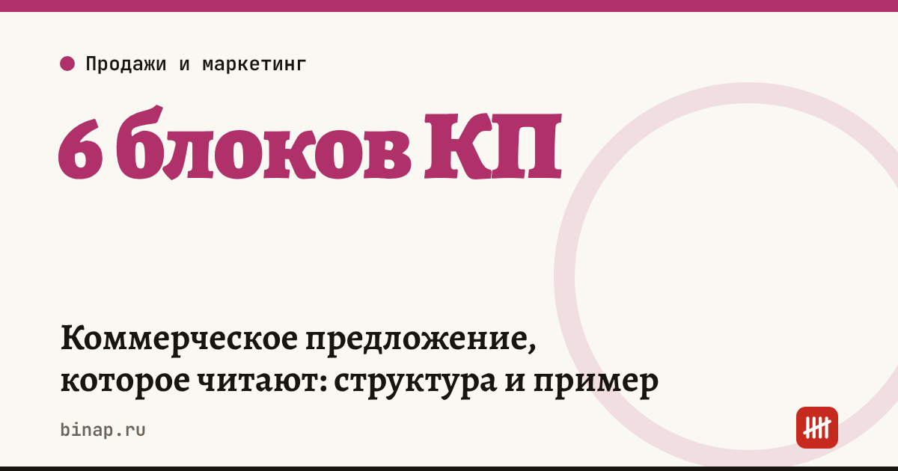

Коммерческое предложение, которое читают: структура и пример

Коммерческое предложение читают, если в нём на первом экране видно, какую задачу клиента вы решаете, сколько это стоит и что сделать дальше. Остальное — подробности для тех, кто уже заинтересовался. Отдельно помните о юридической стороне: КП с товаром, количеством, ценой и готовностью заключить договор может оказаться офертой (ст. 435 ГК).
Коротко
- В ГК нет понятия «коммерческое предложение». Что это — реклама, приглашение к переговорам или оферта, зависит от содержания.
- Если в КП есть существенные условия и видно намерение заключить договор, это оферта. Она связывает вас с момента, когда её получил клиент (ст. 435 ГК).
- Оферту нельзя отозвать, пока не истёк срок для ответа, если в ней не сказано иное (ст. 436 ГК).
- Предложение неопределённому кругу лиц по умолчанию считается приглашением делать оферты (п. 1 ст. 437 ГК).
- Рабочая структура — 6 блоков, первые три помещаются на один экран телефона.
Сроки, изменения и разборы для ИП и самозанятых — каждое утро в Telegram и MAX. Подпишитесь, чтобы не пропустить.
Что это значит
КП — это не презентация компании. Клиент открывает его, чтобы понять три вещи: про его ли это задачу, сколько стоит и что дальше. Поэтому начинать стоит с клиента, а не с истории компании и наград.
Структура на 6 блоков:
- Заголовок с задачей клиента. Не «Коммерческое предложение ООО „Ромашка“», а «Уборка офиса 300 м² с 1 декабря: 3 варианта».
- Что получит клиент. 2–3 пункта с цифрами: сроки, объём, гарантия.
- Цена и варианты. Лучше 2–3 пакета, чем одна цифра. Клиент сравнивает пакеты между собой, а не с конкурентом.
- Почему вам можно доверять. Один-два факта: сколько лет работаете, похожий клиент, ссылка на отзывы.
- Срок действия и условия. До какого числа действует цена, порядок оплаты, что не входит в цену.
- Следующий шаг. Одно действие: «ответьте „да“ — пришлём договор», «выберите время звонка».
Пример для клининга (цифры условные, расчёт редакции). Офис 300 м², уборка 5 раз в неделю. - «Базовый»: ежедневная уборка — 45 000 ₽ в месяц. - «Стандарт»: плюс мойка окон раз в квартал — 52 000 ₽ в месяц. - «Полный»: плюс расходники и химчистка ковролина раз в полгода — 60 000 ₽ в месяц. Цена действует до 30 ноября 2026 года. Оплата — ежемесячно по счёту, первый месяц — после пробной недели.
Когда КП связывает вас ценой. Если в КП есть всё, что нужно для договора, и видно, что вы готовы его заключить, клиент может принять предложение. Например, оплатить счёт из КП. После этого договор можно считать заключённым, и цену поменять уже нельзя. Если такой воли в КП нет, само по себе его отправка правовых последствий не несёт. Поэтому: - указывайте срок действия цены — так клиенту и вам ясно, до какого числа вы связаны этим предложением; - если не хотите себя связывать, прямо напишите: «Предложение не является офертой, условия фиксируются в договоре»; - для рассылки по базе или на сайте помните: предложение неопределённому кругу лиц по умолчанию — приглашение делать оферты, но, если в нём есть все существенные условия и воля заключить договор с любым, кто откликнется, это публичная оферта (п. 2 ст. 437 ГК).
Что сделать сейчас
- Откройте последнее отправленное КП на телефоне. Видны ли на первом экране задача клиента, цена и следующий шаг? Если нет, переставьте блоки.
- Добавьте срок действия цены и строку про оферту — одну из двух формулировок выше.
- Сделайте 2–3 пакета вместо одной цены.
- Через 2 дня после отправки напишите клиенту. Сколько КП доходят до встречи, считайте по воронке продаж.
- Готовые шаблоны КП для своей ниши посмотрите у нас: для подрядчиков, рекламных агентств, кафе на банкет и кейтеринг, страховых агентов и кадровых агентств — скачать шаблон бесплатно. Черновик КП под клиента можно собрать с нейросетью — запросы есть в статье «Нейросеть для отдела продаж».
Частые вопросы
КП — это оферта? Зависит от содержания. Если есть существенные условия договора и видно намерение заключить его с адресатом, это оферта (ст. 435 ГК). Если нет — приглашение к переговорам.
Можно ли отозвать КП, если цена выросла? Если КП — оферта со сроком для ответа, в течение этого срока отозвать её нельзя, если в самой оферте не сказано иное (ст. 436 ГК). Поэтому пишите срок действия цены.
Сколько вариантов цены давать? 2–3 пакета. Так клиенту проще выбрать, и разговор переходит от «дорого» к «какой вариант».